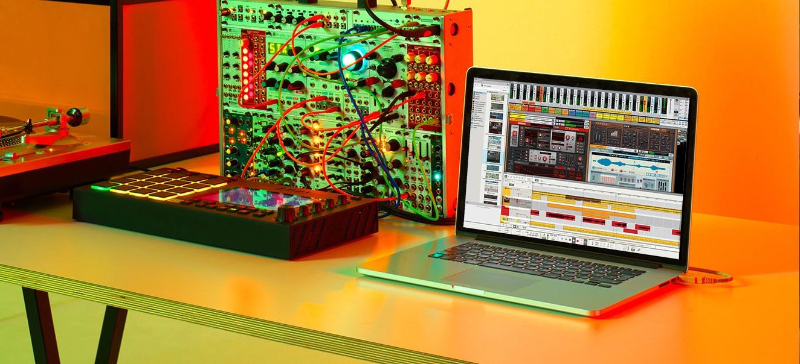

Welcome to Malcolm’s CSD120 Website!
I am currently studying Computer programming at Sault College in Northern Ontario. Becuase of the global panademic the course is offered online this year. I have some previous experience with computers mostly by way of DAWs (Digital Audio Workstations). The last time I actually wrote code was in 1986 on a Atari 400 with the "basic" language provided by Atari as a free cartrigde.
My goal is too understand as much as I can and find gainful emplowment related to computers. I have some family connections that may help me get an intership at a local business. I am also willing to travel anywehere in Canada to work. Perhaps Vancouver, Toronto, or Montreal. That being said, a lot of work is becoming remote in the computer realm so I could also remain here in Sault Ste Marie.
My Favourite Things
Music Production
- Sound Design
- Mixing
- Song/Track Production
Haiku - Pot Holes
Meandering thoughts
suddenly see pot holes turn
into the lake
by